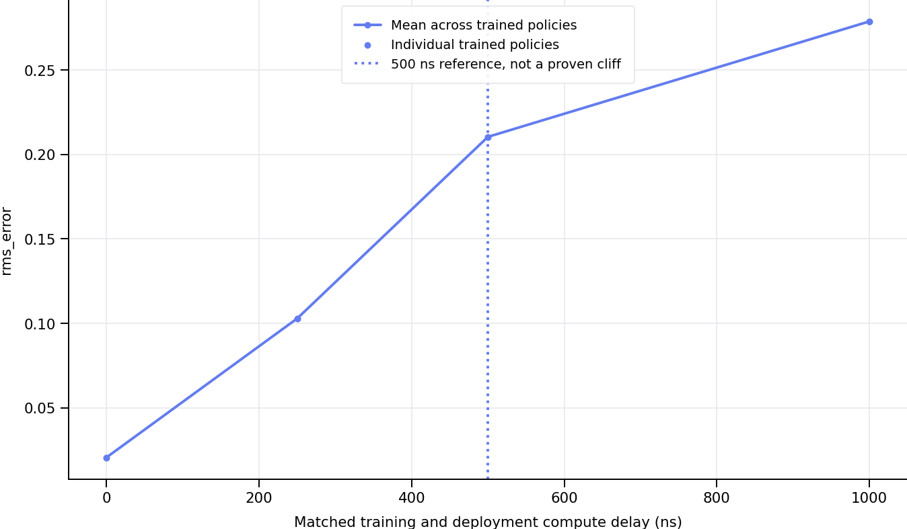
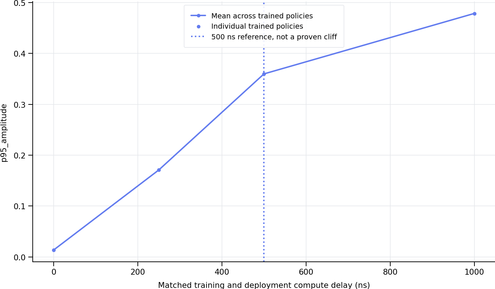
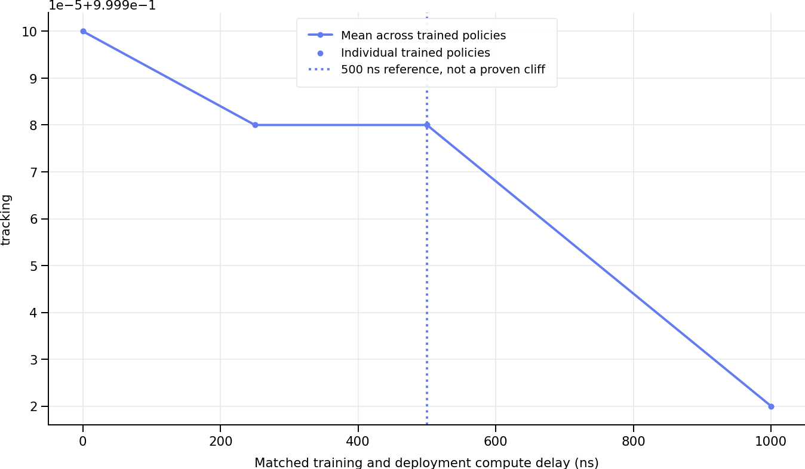
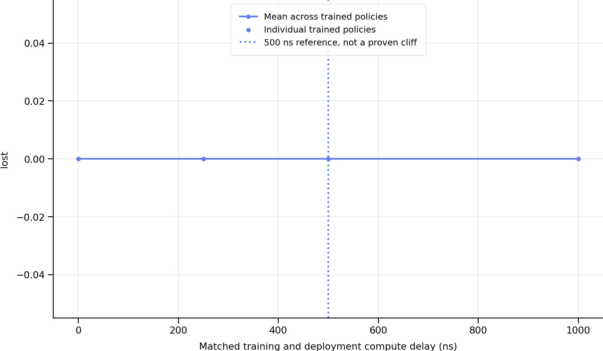
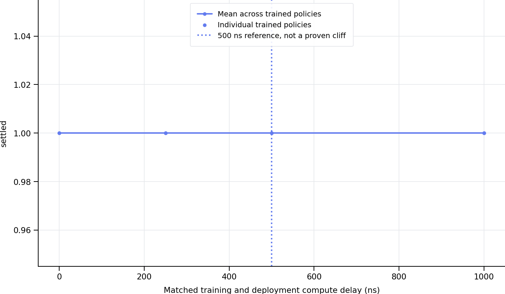
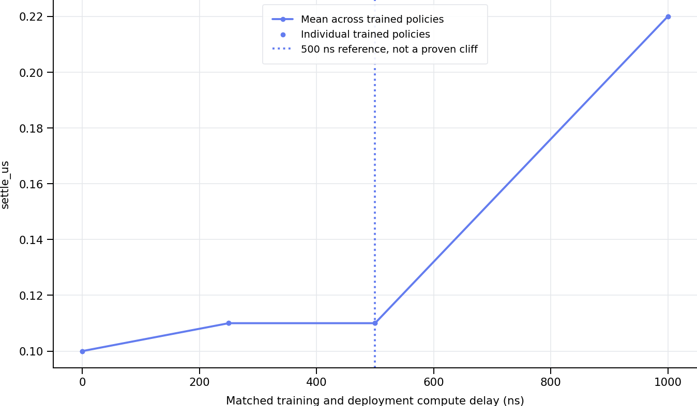

Each model is evaluated only at its training delay. Curves are numerically sorted. Points are means across evaluation episodes; aggregate means weight trained policies equally. Error bars show one standard error between trained policies when at least two exist. A single training seed cannot establish training robustness. Settling time is conditional on success; inspect settled and loss fractions alongside it. 500 ns is a reference, not an imposed failure threshold. Simulation budgets are separate from measured host runtime. Profiles are not machine calibrated.
| latency_ns | training_runs | rms_error | rms_error_n_models | rms_error_se_between_models | mean_error | mean_error_n_models | mean_error_se_between_models | p95_amplitude | p95_amplitude_n_models | p95_amplitude_se_between_models | tracking | tracking_n_models | tracking_se_between_models | lost | lost_n_models | lost_se_between_models | settled | settled_n_models | settled_se_between_models | settle_us | settle_us_n_models | settle_us_se_between_models |
|---|---|---|---|---|---|---|---|---|---|---|---|---|---|---|---|---|---|---|---|---|---|---|
| 0.0 | 1 | 0.020583 | 1 | NaN | 0.007277 | 1 | NaN | 0.013576 | 1 | NaN | 1.00000 | 1 | NaN | 0.0 | 1 | NaN | 1.0 | 1 | NaN | 0.10 | 1 | NaN |
| 250.0 | 1 | 0.102857 | 1 | NaN | 0.088127 | 1 | NaN | 0.170936 | 1 | NaN | 0.99998 | 1 | NaN | 0.0 | 1 | NaN | 1.0 | 1 | NaN | 0.11 | 1 | NaN |
| 500.0 | 1 | 0.210397 | 1 | NaN | 0.185162 | 1 | NaN | 0.359808 | 1 | NaN | 0.99998 | 1 | NaN | 0.0 | 1 | NaN | 1.0 | 1 | NaN | 0.11 | 1 | NaN |
| 1000.0 | 1 | 0.278753 | 1 | NaN | 0.244893 | 1 | NaN | 0.478635 | 1 | NaN | 0.99992 | 1 | NaN | 0.0 | 1 | NaN | 1.0 | 1 | NaN | 0.22 | 1 | NaN |






| environment | dynamics_profile | model | trained_ns | deployed_ns | total_action_ns | inference_jitter_ns | latency_source | backend | episodes | rms_error | rms_error_n | rms_error_std | rms_error_se | mean_error | mean_error_n | mean_error_std | mean_error_se | p95_amplitude | p95_amplitude_n | p95_amplitude_std | p95_amplitude_se | settle_us | settle_us_n | settle_us_std | settle_us_se | lost | lost_n | lost_std | lost_se | settled | settled_n | settled_std | settled_se | tracking | tracking_n | tracking_std | tracking_se | mean_speed | mean_speed_n | mean_speed_std | mean_speed_se |
|---|---|---|---|---|---|---|---|---|---|---|---|---|---|---|---|---|---|---|---|---|---|---|---|---|---|---|---|---|---|---|---|---|---|---|---|---|---|---|---|---|---|
| laser | deterministic | laser_experiments/models_det/laser_lat_0ns_paper16_s0 | 0.0 | 0.0 | 0.0 | 0.0 | budget | numpy | 10 | 0.020583 | 10 | 0.010367 | 0.003278 | 0.007277 | 10 | 0.000420 | 0.000133 | 0.013576 | 10 | 0.000170 | 0.000054 | 0.10 | 10 | 0.000000 | 0.00 | 0.0 | 10 | 0.0 | 0.0 | 1.0 | 10 | 0.0 | 0.0 | 1.00000 | 10 | 0.000000 | 0.00000 | 0.025982 | 10 | 0.000248 | 0.000078 |
| laser | deterministic | laser_experiments/models_det/laser_lat_250ns_paper16_s0 | 250.0 | 250.0 | 250.0 | 0.0 | budget | numpy | 10 | 0.102857 | 10 | 0.003624 | 0.001146 | 0.088127 | 10 | 0.001173 | 0.000371 | 0.170936 | 10 | 0.003269 | 0.001034 | 0.11 | 10 | 0.031623 | 0.01 | 0.0 | 10 | 0.0 | 0.0 | 1.0 | 10 | 0.0 | 0.0 | 0.99998 | 10 | 0.000063 | 0.00002 | 0.050540 | 10 | 0.000636 | 0.000201 |
| laser | deterministic | laser_experiments/models_det/laser_lat_500ns_paper16_s0 | 500.0 | 500.0 | 500.0 | 0.0 | budget | numpy | 10 | 0.210397 | 10 | 0.003933 | 0.001244 | 0.185162 | 10 | 0.002941 | 0.000930 | 0.359808 | 10 | 0.007749 | 0.002450 | 0.11 | 10 | 0.031623 | 0.01 | 0.0 | 10 | 0.0 | 0.0 | 1.0 | 10 | 0.0 | 0.0 | 0.99998 | 10 | 0.000063 | 0.00002 | 0.063496 | 10 | 0.000864 | 0.000273 |
| laser | deterministic | laser_experiments/models_det/laser_lat_1000ns_paper16_s0 | 1000.0 | 1000.0 | 1000.0 | 0.0 | budget | numpy | 10 | 0.278753 | 10 | 0.005933 | 0.001876 | 0.244893 | 10 | 0.004284 | 0.001355 | 0.478635 | 10 | 0.015659 | 0.004952 | 0.22 | 10 | 0.379473 | 0.12 | 0.0 | 10 | 0.0 | 0.0 | 1.0 | 10 | 0.0 | 0.0 | 0.99992 | 10 | 0.000253 | 0.00008 | 0.061027 | 10 | 0.000920 | 0.000291 |